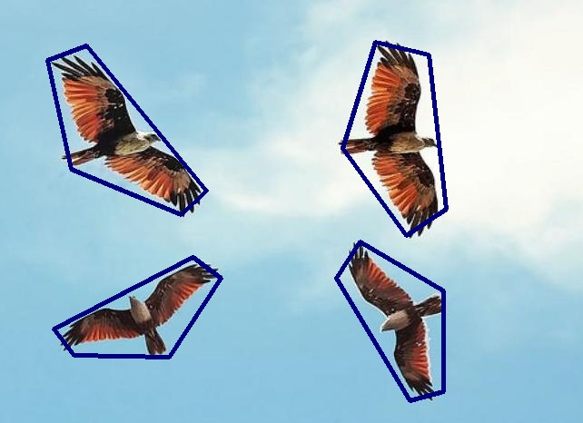
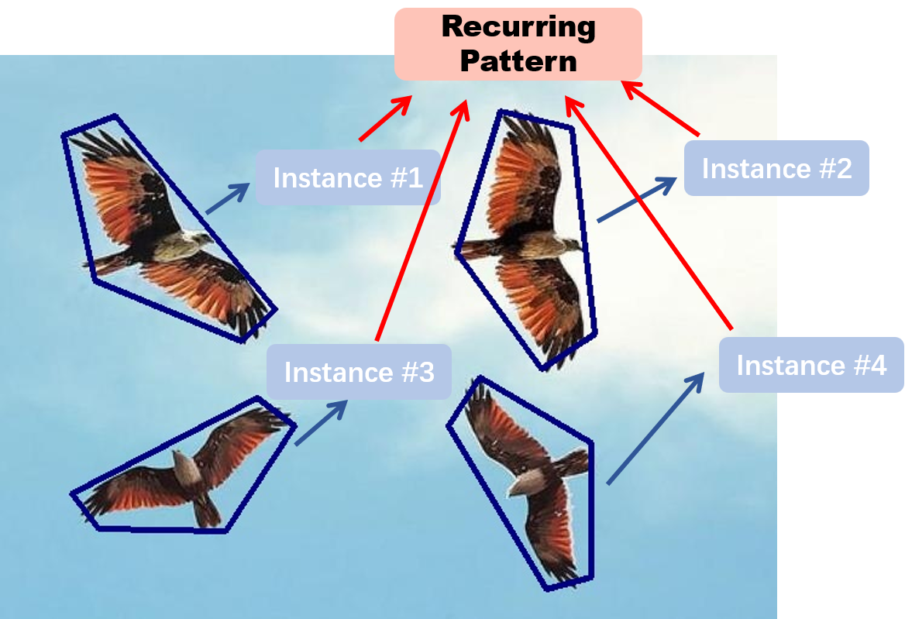
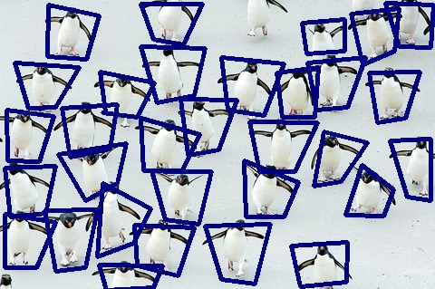

Examples of Recurring Patterns
Here are some examples of images containing Recurring Pattern (RP):

An example image contains ONE recurring pattern.

An illustration of left image: the image contains one Recurring
Pattern
with four
instances (each eagle is an instance) (each labeled in
blue ployline).

Another example image contains ONE recurring pattern. Notice that the instances could be
deformed and scatter, as long as they are similar with each other.
Besides single recurring pattern, it is trival to find multiple recurring patterns in
an image.
Here are some other examples:
An example image contains TWO recurring patterns. Notice that even the image is taken in a
projective view, there still exists recurring patterns.
An example image contains a lot of recurring patterns. How many recurring patterns can you
observe?